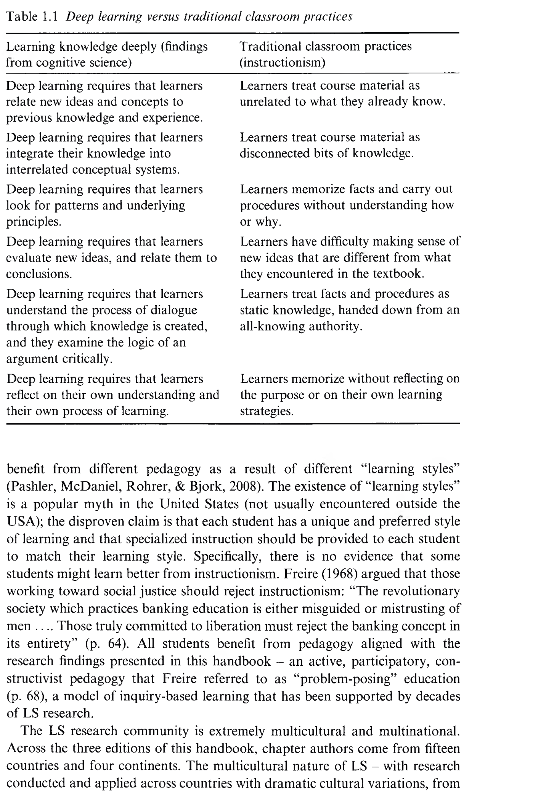

An Introduction to the Learning Sciences
학습과학 개론: 21세기 지식 경제 시대의 새로운 학습 패러다임
👤 저자 및 출처
R. Keith Sawyer (Univ. of North Carolina at Chapel Hill)
『The Cambridge Handbook of the Learning Sciences』 제3판 (2022, pp. 20–42)
학습과학의 창시적 이론가이자 창의성·협업 연구의 세계적 석학
🎯 챕터 핵심 아젠다
- 지시주의(Instructionism) 비판: 산업화 시대 암기 교육의 붕괴
- 깊은 학습(Deeper Learning): 개념적 이해와 유연한 전이
- 학습의 6대 인지 메커니즘: 스캐폴딩, 외재화, 성찰 등
- 사회문화·사회정의·에듀테크·DBR: 학습 환경의 총체적 재설계
🎯 강의 목표 및 핵심 맥락 (Context & Goal)
본 장은 『The Cambridge Handbook of the Learning Sciences』 3판의 문을 여는 총괄 개론입니다. 19세기 산업화 공장 모델에 기반한 '지시주의(Instructionism)'의 한계를 해체하고, 21세기 지식 경제 사회에서 왜 '깊은 학습(Deeper Learning)'이 필수적인지 규명하며, 33개 챕터 전체의 학문적 지형도를 제시합니다.
📖 원문 심층 학술 해설 (Detailed Academic Commentary)
1. 학습과학의 탄생 배경: 1991년 최초의 학술대회(ICLS)와 학술지(JLS) 창간으로 공식 출범한 학습과학은 인지과학, 컴퓨터과학, 교육심리학, 사회문화인류학을 아우르는 다학제간 융합 학문입니다.
2. 교육의 위기: 1900년에는 일자리의 95%가 단순 저숙련 노동이었지만 2020년에는 10% 미만으로 감소했습니다. 그러나 학교는 여전히 사실과 절차를 암기시키는 지시주의에 머물러 있습니다.
💡 수업/세미나 진행 팁 & 질문 가이드
"우리가 학교에서 배운 지식 중 실생활 문제 해결에 직접 쓰이지 못했던 경험은 무엇인가?"라는 질문으로 지시주의와 깊은 학습의 차이를 청중이 자각하도록 유도하세요.
학습과학(The Learning Sciences)이란 무엇인가?
단일 분과를 넘어선 학제간 융합 실증 과학 (Interdisciplinary Field)
🔬 학제간 융합 (Interdisciplinary)
명칭의 's'가 의미하듯 인지과학, 컴퓨터과학, 교육심리학, 인류학, 사회학, 디자인학, 교수설계의 유기적 결합
🌐 전방위적 학습 환경 연구
학교 교실뿐 아니라 가정, 가족 및 지역사회, 직장 현장, 모바일 앱, 웹 브라우저 등 비형식적 학습 환경 전수 탐구
🛠️ 환경 재설계 (Redesign)
인지적·사회적 과정을 과학적으로 규명하여 사람들이 더 깊고 효과적으로 배우도록 학습 생태계를 전면 재설계
🎯 강의 목표 및 핵심 맥락
학습과학의 정의, 다학제적(Interdisciplinary) 성격, 그리고 연구 대상 환경의 포괄성을 명확히 설명합니다.
📖 원문 심층 학술 해설
1980년대와 90년대, 개별 학문(예: 인지심리학의 탈맥락적 실험실 연구, 컴퓨터과학의 초기 AI 모델)의 한계를 깨달은 연구자들이 학제간 협력을 시작했습니다. 학습과학은 이론 연구에 그치지 않고 실제 교실과 디지털 학습 환경을 '재설계(Redesign)'하는 실천 지향적 학문입니다.
💡 수업/세미나 진행 팁 & 질문 가이드
전통 교육학과 학습과학의 가장 큰 차이점(학제간 접근, 테크놀로지 결합, 실제 학습 환경 재설계)을 강조하세요.
지시주의(Instructionism)의 5대 상식적 가정
과학적 검증 없이 19~20세기 관료제 학교에 정착된 암묵적 도그마
1. 지식 = 사실과 절차
지식은 세상에 관한 고립된 사실(Fact)과 정형화된 문제 해결 절차(Procedure)의 목록이다.
2. 학교의 목표 = 머리에 주입
교육의 목적은 학생의 머릿속에 사실과 절차를 집어넣는 것이며, 많이 외운 자가 유능하다.
3. 교사 = 일방적 지식 전달자
교사는 정답을 소유한 권위자이며, 학생은 빈 그릇(Tabula Rasa)으로서 수동적으로 수용한다.
4. 선형적 순차성
단순 사실을 먼저 완벽히 외워야 복잡한 사고가 가능하다는 성인 중심의 자의적 위계관.
5. 암기력 측정 평가
교육 성패는 표준화된 지필 시험에서 얼마나 많은 사실과 절차를 회상(Recall)하는가로 판별.
⚠️ 비판적 귀결
실제 아동의 인지 발달 연구 없이 전문가 성인의 편의에 따라 설계된 비과학적 시스템.
🎯 강의 목표 및 핵심 맥락
전통 학교가 딛고 선 5가지 비과학적 '상식적 가정'을 조목조목 분석하여 지시주의의 구조적 한계를 폭로합니다.
📖 원문 심층 학술 해설
소이어(Sawyer)는 1920년대 대규모 학교 제도가 형성될 당시 인간 학습에 대한 과학적 연구가 전무했음을 지적합니다. 교육과정의 순서('단순'에서 '복잡')조차 아동이 어떻게 배우는가가 아니라 교과서 저자나 학자들의 자의적 판단으로 결정되었습니다.
💡 수업/세미나 진행 팁 & 질문 가이드
"기초 사실을 다 외우기 전에는 창의적 프로젝트를 할 수 없다"는 명제가 왜 인지과학적으로 오류인지 토론해 보세요.
은행 저축식 교육 vs 21세기 창의적 지식 경제
프레이리(Freire)와 파퍼트(Papert)의 비판과 산업 생태계의 대변혁
🏦 은행 저축식 교육 (Freire, 1968)
- 지식을 은행 계좌에 입금하듯 학생 머리에 예치
- 시모어 파퍼트(Papert, 1993): 이를 '지시주의(Instructionism)'로 명명
- 1900년 95%의 공장형 저숙련 반복 노동자 양성 모델
- 암기가 곧 교양이었던 과거 통신 단절 시대의 유물
💡 창의적 지식 경제 시대 (Bereiter; Drucker)
- 2020년 단순 반복 일자리 10% 미만으로 급감 (자동화·AI)
- 인터넷 검색으로 모든 단순 사실은 즉각 확인 가능
- 필수 역량: 복합 개념의 심층 이해, 창의적 지식 창출, 비판적 사료 평가, 평생 학습 자기조절력
- 지식은 탐구와 재발명(Re-invention)을 통해서만 발생
🎯 강의 목표 및 핵심 맥락
파울로 프레이리의 '은행 저축식 교육' 비판과 시모어 파퍼트의 '지시주의' 명명을 학습과학의 시대적 배경과 연결합니다.
📖 원문 심층 학술 해설
피터 드러커(Drucker, 1993)와 칼 베라이터(Bereiter, 2002)가 지적하듯, 현대 경제는 '지식 작업(Knowledge Work)'에 의해 주도됩니다. 단순 사실 암기는 자동화에 의해 가치를 상실했으며, 고차적 개념적 사고와 협력적 지식 생성이 생존의 조건이 되었습니다.
💡 수업/세미나 진행 팁 & 질문 가이드
생성형 AI 시대에 검색을 넘어선 '지식 창조(Knowledge Creation)'가 교육에서 왜 더 중요해졌는지 논의하세요.
학습과학이 밝혀낸 학습의 7대 기본 원칙
지난 30년간의 실증 인지·사회 연구가 도출한 핵심 합의 (Sawyer, 2019)
1. 심층 개념 이해
지식의 조건화: 어떤 상황에 적용하고 어떻게 수정할지 아는 전이(Transfer) 역량
2. 연결된 학습
파편화된 목록이 아닌 학문 내·학문 간 상호 연결된 거대한 스키마 네트워크
3. 학습 과정에 집중
교사의 일방 강의가 아닌 학습자가 능동적으로 참여할 때만 깊은 이해 획득
4. 학습 환경 설계
물리적 배치, 디지털 도구, 사회적 상호작용을 포괄하는 전방위적 비계 설계
5. 집단과 맥락
동료 및 교사와의 협력적 지식 구축과 사회적 담화에 참여할 때 학습 극대화
6. 선행 지식 & 성찰
직관적 오개념을 출발점으로 삼는 개념 변화 + 메타인지적 성찰 기회 제공
🎯 강의 목표 및 핵심 맥락
학습과학계가 20여 년간의 실증 연구를 통해 도출한 7대 기본 합의 사항을 일목요연하게 조망합니다.
📖 원문 심층 학술 해설
이 7가지 합의는 인지심리학, 컴퓨터과학, 사회문화이론의 연구 결과들이 하나로 수렴된 결론입니다. 특히 지식이 고립된 사실이 아니라 '연결된 네트워크(Connected Learning)'로 조직될 때 비로소 장기 파지와 실생활 전이가 가능합니다.
💡 수업/세미나 진행 팁 & 질문 가이드
7대 원칙 중 현재 교육 현장에서 가장 구현하기 어려운 요소가 무엇인지 청중과 토론해 보세요.
지식의 본질: 논리 실증주의에서 인식적 실천으로
"지식은 명제와 연산의 집합인가, 학문 공동체의 살아있는 실천인가?"
🏛️ 20세기 전반: 논리 실증주의 (Logical Empiricism)
- 지식 = 세상에 대한 명제적 진술(사실) + 논리적 연산(절차)
- 행동주의 심리학과 결합 ➔ 지시주의 교육관 정당화
- 교육 = 교사가 학생에게 사실과 절차를 일방 전달하는 과정
🔬 현대 학습과학: 인식적 실천 (Epistemic Practices)
- 실제 과학자들이 지식을 창조하는 현장 분석 (1960년대 이후)
- 지식 = "과학을 해나가는 방법" + 통합된 설명 모델
- 가설 설정, 실험, 논쟁, 동료 평가, 주장의 정당화 실천에 참여
🎯 강의 목표 및 핵심 맥락
전통 지시주의의 철학적 뿌리인 '논리 실증주의(Logical Empiricism)'를 비판하고, 학습과학이 지향하는 '인식적 실천(Epistemological Practices)' 개념을 확립합니다.
📖 원문 심층 학술 해설
맥과이어(McGuire, 1992)와 수페(Suppe, 1974)가 설명하듯, 논리 실증주의는 지식을 탈맥락화된 명제들의 정적 집합으로 환원했습니다. 그러나 실제 과학 활동은 사회적 논증, 모델링, 비판적 평가가 얽힌 역동적 실천입니다.
💡 수업/세미나 진행 팁 & 질문 가이드
과학 교과서의 실험 따라하기(Recipe Lab)가 왜 진정한 과학적 탐구(Epistemic Practice)가 될 수 없는지 설명해 보세요.
전통적 교실 관행 vs 깊은 학습 전면 비교 (Table 1.1)
지시주의(Instructionism)와 학습과학(Learning Sciences)의 패러다임 대비
| 비교 차원 | 전통 교실 (지시주의) | 깊은 학습 (학습과학) |
|---|---|---|
| 선행 지식 | 학습 내용과 무관한 것으로 취급 | 이전 지식 및 경험과 능동적 연계 |
| 지식 구조 | 파편화된 단편 정보 조각 | 상호 연결된 개념 체계로 통합 |
| 원리 탐색 | 이유 모른 채 사실/절차 암기 | 기저 원리 및 시스템 패턴 탐색 |
| 새 아이디어 | 교과서 밖 아이디어 수용 곤란 | 새 아이디어 비판적 평가 및 연계 |
| 권위와 대화 | 권위자가 하달한 고정된 정답 | 지식 생성 대화 및 논리적 검토 |
| 성찰 | 목적/전략에 대한 성찰 부재 | 자신의 이해 및 학습 과정 자체 성찰 |

🎯 강의 목표 및 핵심 맥락
원서 Table 1.1의 6대 비교 차원을 분석하여 학습 패러다임의 전면적 전환을 선명하게 제시합니다.
📖 원문 심층 학술 해설
Table 1.1은 핸드북 전체를 관통하는 핵심 프레임워크입니다. 지식관, 선행지식, 패턴탐색, 권위, 성찰의 모든 차원이 유기적으로 연결되어 있으며, 어느 한 차원만 바꾸어서는 진정한 깊은 학습이 일어나지 않습니다.
💡 수업/세미나 진행 팁 & 질문 가이드
슬라이드의 표를 보며 "학습자에게 가장 큰 인지적 도약을 요구하는 차원은 무엇인가?"를 토론하세요.
상황성(Situativity)과 실제적 실천(Authentic Practices)
"지식은 머릿속 데이터가 아니라 맥락·도구·사람과의 상호작용이다"
🌍 상황성(Situativity) 관점
- 지식은 고립된 두뇌 속 정적 구조물이 아님
- 행위자 + 도구 + 타인 + 활동 환경의 역동적 결합 과정 (Engeström; Rogoff)
- 학습이란 협력적 활동에의 참여 패턴이 시간에 따라 변화하는 것
🎯 발달적으로 적합한 실제적 실천
- 역사 교육: 연도 암기가 아닌 1차 사료 비판과 역사적 논증 (Carretero)
- 과학교육(NGSS): 설명 구축, 증거 기반 논증, 소통과 정당화 (NRC, 2012)
- 전문가의 실천을 아동의 발달 단계에 맞게 재설계(Developmentally Appropriate)
🎯 강의 목표 및 핵심 맥락
상황 인지(Situated Cognition) 관점과 교과 교육에서의 '실제적 실천(Authentic Practices)' 개념을 규명합니다.
📖 원문 심층 학술 해설
로고프(Rogoff, 1990)가 밝혔듯 학습은 사회적 실천 참여의 질적 변화입니다. 학생들에게 전문가와 동일한 작업을 강요하는 것이 아니라, 전문가의 핵심 실천 양식을 발달 수준에 맞게 스캐폴딩된 형태로 제공하는 것이 학습과학 설계의 요체입니다.
💡 수업/세미나 진행 팁 & 질문 가이드
소프트웨어 교육에서 단순 문법 타이핑 대신 '오픈소스 기여'나 '페어 프로그래밍'이 왜 실제적 실천에 해당하는지 연결해 보세요.
"학습 스타일" 신화의 타파와 글로벌 보편적 형평성
학습과학 기반 교수법은 모든 문화권과 소외 계층에 보편 타당하다
🚫 '학습 스타일(Learning Styles)'의 허구성
- 학생마다 고유한 학습 스타일이 있어 맞춤형으로 가르쳐야 한다는 통념
- 실증적 근거 전무한 대중적 신화(Myth)로 판명 (Pashler et al., 2008)
- 지시주의를 정당화하는 구실로 악용되는 것을 경계
⚖️ 성취도 격차 축소 (Narrowing Gaps)
- 미국, 중국, 일본, 유럽 등 전 세계 다양한 문화권에서 동일한 효과 입증
- 미국 대학 STEM 연구: 학습과학 기반 능동 수업이 소수자·취약계층의 성취도 격차를 대폭 축소 (Haak et al., 2011; Theobald et al., 2020)
🎯 강의 목표 및 핵심 맥락
'학습 스타일' 신화를 과학적으로 반증하고, 학습과학 교수법이 교육 형평성에 기여하는 보편적 가치를 설명합니다.
📖 원문 심층 학술 해설
패슐러 등(Pashler et al., 2008)의 대규모 메타분석은 학습 스타일 맞춤 지도가 효과가 없음을 밝혔습니다. 반면 능동적 구성주의 기반의 학습과학 교수법은 전 세계 모든 문화권에서 작동하며, 특히 소외 계층의 학업 성취를 끌어올려 사회 정의에 기여합니다.
💡 수업/세미나 진행 팁 & 질문 가이드
"소외 계층 학생들은 기초 지식부터 외워야 한다"는 편견이 왜 위험한 교육적 차별인지 논의하세요.
전문가 이행과 선행 지식의 활용 (Section 1.2.1~1.2.2)
초보자의 직관적 오개념을 레버리지하는 개념 변화(Conceptual Change)
♟️ 1.2.1 초보자 ➔ 전문가 이행
- 초기 AI 전문가 시스템 연구에서 발원
- 전문가는 표면 특징이 아닌 핵심 원리 중심 스키마로 사고
- 발달심리학(Piaget, Vygotsky)과 융합하여 초보자의 심적 발달 단계 규명
🌱 1.2.2 선행 지식과 소박 이론
- 아동은 빈 머리가 아닌 소박 물리·생물학적 오개념을 지니고 입학
- 선행 지식을 무시하면 시험 후 즉시 원래 오개념으로 회귀
- 오개념을 출발점으로 삼아 재구성하는 개념 변화(Conceptual Change)
🎯 강의 목표 및 핵심 맥락
전문가-초보자 연구의 유산과 선행 지식 및 오개념을 활용한 개념 변화 메커니즘을 규명합니다.
📖 원문 심층 학술 해설
디세사(diSessa, Chapter 6)가 강조하듯, 아동의 일상적 직관(p-prims)은 잘못된 것이 아니라 새로운 지식을 구축하는 인지적 자원(Resources)입니다. 교육은 이를 억압하는 것이 아니라 세련된 과학적 멘탈 모델로 진화시키는 과정입니다.
💡 수업/세미나 진행 팁 & 질문 가이드
프로그래밍 초보자가 겪는 변수(`x = x + 1`) 오개념이 어떻게 수학적 선행 지식과의 충돌에서 비롯되는지 예시를 들어보세요.
스캐폴딩(Scaffolding)과 페이딩(Fading) 메커니즘
정답을 대신 주는 것이 아니라 스스로 답을 찾도록 유도하는 지능형 지원
🏗️ 맞춤형 인지 지원
학습자의 현재 ZPD(근접발달영역) 필요에 정밀하게 맞춰진 임시적 인지 비계 제공
💡 프롬프트와 힌트의 힘
정답을 직접 알려주지 않고, 아동이 능동적으로 지식을 구성하도록 유도하는 힌트 제공
📉 점진적 페이딩 (Fading)
건물이 완공되면 비계를 철거하듯, 학습자의 역량 성장에 따라 비계를 점진적으로 제거
🎯 강의 목표 및 핵심 맥락
스캐폴딩(비계 설정)의 진정한 정의와 좋은 비계 vs 나쁜 비계의 기준, 그리고 페이딩(Fading)의 원리를 설명합니다.
📖 원문 심층 학술 해설
타박과 라이저(Tabak & Reiser, Chapter 3)가 설명하듯, 대신 과제를 해결해 주는 것은 아동의 주체적 인지 구성을 가로막습니다. 좋은 비계는 인지적 프롬프트를 통해 아동이 자기 조절 능력을 발달시키도록 돕고 궁극적으로 비계 없이 자립하게 만듭니다.
💡 수업/세미나 진행 팁 & 질문 가이드
교사가 교실에서 흔히 범하는 "과도한 개입(Over-scaffolding)"의 부작용을 논의하세요.
외재화(Articulation)와 성찰(Reflection)의 상승 작용
"다 배운 후 표현하는 것이 아니라, 표현하는 과정 속에서 비로소 배운다"
🗣️ 1.2.4 외재화와 명시화 (Articulation)
- 불완전한 생각을 소리 내어 말하고 글/그림으로 표현
- 비고츠키 내면화 이론: 사회적 상호작용 ➔ 개인 내적 사고
- 사고를 언어화하는 과정 자체가 학습을 촉진하는 상호 강화 루프
🪞 1.2.5 성찰과 메타인지 (Reflection)
- 학습하면서 자신의 학습 과정과 이해 수준을 모니터링 (Winne & Azevedo)
- 외재화된 자신의 사고를 눈앞에서 객관적으로 검토
- 사고에 대해 생각하는 메타 담화 스캐폴딩 필수
🎯 강의 목표 및 핵심 맥락
외재화(Articulation)와 성찰(Reflection)이 맺는 인지적 선순환 피드백 루프를 규명합니다.
📖 원문 심층 학술 해설
비고츠키(1978)는 모든 고차 정신 기능이 사람들 사이의 외적 상호작용에서 출발해 내면화된다고 보았습니다. 생각을 소리 내어 말하는 씽크 얼라우드(Think-aloud)나 산출물 제작은 암묵적 인지를 외현화하여 메타인지적 점검을 가능케 합니다.
💡 수업/세미나 진행 팁 & 질문 가이드
프로그래밍에서 '고무오리 디버깅'이 어떻게 Articulation과 Reflection의 대표 사례가 되는지 연결해 보세요.
구체물에서 추상화로: 시각화 테크놀로지의 비계
피아제(Piaget)의 교구 조작 통찰을 디지털 인터페이스로 확장
🧩 피아제의 구체적 조작 통찰
- 학습의 자연스러운 발달: 구체적 조작물 ➔ 추상적 개념
- 1960~70년대 수학 교구(Manipulatives, 컬러 바)의 확산
- 물리적 교구만으로는 고차원 추상 지식 표상에 한계
💻 디지털 시각화의 혁신적 어포던스
- 고도의 추상적 개념을 동적·시각적 형태로 가시화
- 과학적 논증 구조 시각화 (Andriessen & Baker, Ch 21)
- 시각·공간적 이해가 언어적 이해에 선행하여 강력한 인지적 비계 역할 수행
🎯 강의 목표 및 핵심 맥락
피아제의 구체물 조작 이론이 현대 컴퓨터 그래픽스와 시각화 소프트웨어로 어떻게 진화했는지 설명합니다.
📖 원문 심층 학술 해설
컴퓨터는 물리적 블록으로 표현 불가능한 복잡계 시뮬레이션, 알고리즘 제어 흐름, 과학적 논증의 연결망을 시각적 아티팩트로 만들어 줍니다. 이는 추상적 사고의 문턱을 획기적으로 낮춰 줍니다.
💡 수업/세미나 진행 팁 & 질문 가이드
블록 코딩(Scratch)과 메모리 상태 시각화 도구(Python Tutor)의 인지적 비계 효과를 예시로 들어보세요.
사회문화적 관점과 분산 인지(Distributed Cognition)
1980년대 'AI의 겨울' 극복과 학교 밖 4대 비형식 학습 연구
🚢 4대 초기 사회문화 연구 갈래
- 문화적 사회화: 공동체 규범 습득
- 비서구 도제 학습: Lave, Rogoff, Saxe
- 사회적 분산 인지: 해군 함선 항해(Hutchins), 런던 지하철 관제실(Heath & Luff)
- 박물관 비형식 학습: Pierroux et al.
🤝 CSCL과 이중 수준 분석
- 개별 인지(Elemental): 개인의 내적 멘탈 모델
- 사회문화(Systemic): 소집단 담화 및 커뮤니티 실천
- 개별 인지와 문화를 분리하지 않는 상황적 사회 실천(Situated Practice) 연구
🎯 강의 목표 및 핵심 맥락
사회문화적 접근, 분산 인지 이론, 그리고 CSCL의 학문적 발전 과정을 규명합니다.
📖 원문 심층 학술 해설
허친스(Hutchins, 1995)의 해군 항해 연구는 지능이 한 사람의 머리가 아니라 여러 사람과 차트, 계측 도구 등 환경 전체에 '분산(Distributed)'되어 있음을 보였습니다. 학습과학은 개인 인지와 집단 담화를 아우르는 이중 수준 분석을 핵심 방법론으로 삼습니다.
💡 수업/세미나 진행 팁 & 질문 가이드
항공기 조종실이나 수술실 팀의 협업에서 '분산 인지'가 어떻게 작동하는지 사례를 들어 설명해 보세요.
사회 정의(Social Justice)와 문화적 지식 기금
교육 불평등 구조의 해체와 소외 계층의 문화적 자원 통합
🌾 지식 기금 (Funds of Knowledge)
- 가정과 지역사회에서 체득한 문화적 지식 저장소
- 소외 계층의 문화적 실천을 배제하고 동화만 강요하는 것은 불평등 재생산 (Vossoughi & Gutierrez)
- 사례: 아이티 청소년의 bay odyans 담화 관행을 과학 수업에 접목하여 성취도 향상
🏛️ ISLS 사회 정의 연구의 발전
- 2014 JLS 특별호: "Social Justice Research in LS"
- 2017 『Power and Privilege in the Learning Sciences』
- 2020 ISLS **"Equity and Justice Committee"** 공식 발족
- 탐구형 고급 교육은 모든 학생의 권리임을 천명
🎯 강의 목표 및 핵심 맥락
사회 정의와 교육 형평성 연구가 학습과학의 핵심 연구 영역으로 자리잡게 된 역사와 원리를 설명합니다.
📖 원문 심층 학술 해설
나시르 등(Nasir et al., Chapter 29)이 강조하듯, 소외 계층 학생들의 부진은 인지적 결함이 아니라 학교 문화와 가정 문화 간의 단절에서 기인합니다. 학습과학은 학생들의 고유한 문화적 실천을 지적 자원으로 활용하여 형평성을 달성합니다.
💡 수업/세미나 진행 팁 & 질문 가이드
학습자들의 다양한 일상 언어와 경험을 컴퓨터/과학 수업에 끌어들이는 수업 설계 방안을 논의하세요.
에듀테크의 재개념화: 4대 핵심 인지적 어포던스
단순 지식 전달 튜터를 넘어선 사고의 확장 도구 (Mindtools)
1. 추상 지식의 구체적 표상
눈에 보이지 않는 분자 운동, 알고리즘 실행 상태, 복잡계 상호작용을 동적 모델로 시각화
2. 외재화와 성찰의 매개
자신의 생각과 가설을 시각적·언어적으로 표현하고 다각도로 검토할 수 있는 인터페이스
3. 지식의 능동적 조작·수정
설계(Design) 과정을 통해 프로그래밍, 시뮬레이션 변수 조작 등 지식을 지속적으로 개정
4. 네트워크 기반 협력 학습
지식 포럼(Knowledge Forum), CSCL 플랫폼을 통해 동료들과 아이디어를 통합·발전
🎯 강의 목표 및 핵심 맥락
학습과학이 규명한 컴퓨터 테크놀로지의 4대 인지적 어포던스(Affordances)를 정립합니다.
📖 원문 심층 학술 해설
전통 에듀테크는 객관식 자동 채점이나 동영상 강의 송출 등 지시주의적 틀에 머물렀습니다. 반면 학습과학은 컴퓨터를 학습자의 고차원적 인지를 지원하고 촉진하는 비계이자 마인드툴(Mindtools)로 위치시킵니다.
💡 수업/세미나 진행 팁 & 질문 가이드
현재 학교에 보급된 에듀테크 소프트웨어 중 '지시주의적'인 것과 '학습과학적'인 것을 구분해 보세요.
학습과학 고유의 실천 지향 연구 방법론
단순 실험실 비교를 넘어 교실의 미시적 상호작용 메커니즘을 밝힌다
🔄 디자인 기반 연구 (DBR, Barab)
- 실제 교실 현장에서 교사와 함께 혁신적 환경 설계
- 설계 ➔ 적용 ➔ 분석 ➔ 재설계의 반복적 순환
- 현장의 실천적 개선과 교육 이론 발전을 동시 달성
📹 상호작용 분석 (Interaction Analysis)
- 대규모 비디오 녹화 데이터를 분 단위로 정밀 분석
- (1) 학습자 간 관계 변화, (2) 문제 해결 실천 양식 진화, (3) 개별 인지 변화를 동시에 추적
- 미시발생적 방법(Microgenetic Methods)과의 융합
🎯 강의 목표 및 핵심 맥락
디자인 기반 연구(DBR)와 상호작용 분석(Interaction Analysis) 등 학습과학의 독창적 연구 방법론을 소개합니다.
📖 원문 심층 학술 해설
바랍(Barab, Chapter 9)의 DBR은 생태학적 타당도(Ecological Validity)를 지닌 현장 중심 연구입니다. 무작위 통제 실험(RCT)이 '블랙박스'로 남겨두었던 교실 내 분 단위 인과 메커니즘을 비디오 분석을 통해 낱낱이 밝혀냅니다.
💡 수업/세미나 진행 팁 & 질문 가이드
연구실 안에서의 통제 실험과 실제 교실 기반 DBR의 장단점을 비교 토론해 보세요.
학습과학 30년의 역사적 발전 연표 (1987~2022)
인지과학과 컴퓨터과학의 만남에서 글로벌 통합 학술 공동체로
📅 태동 및 정립기 (1987~2002)
- 1987: IRL(Palo Alto) 및 노스웨스턴 ILS 설립
- 1991: JLS 창간 & 제1회 ICLS 학술대회 개최
- 1991: Roy Pea, 최초의 학습과학 PhD 과정 개설
- 2002: 국제학습과학회(ISLS) 공식 창립 (LS + CSCL)
🌍 글로벌 확장기 (2006~현재)
- 2006: 『핸드북』 초판(1st Ed.) & ijCSCL 창간
- 2008: 최초의 미국 외 ICLS 개최 (네덜란드)
- 2014: 제2판 발간 (중국어·일본어 번역 출간)
- 2021/2022: ICLS-CSCL 단일 통합 & 제3판 발간
🎯 강의 목표 및 핵심 맥락
1987년부터 2022년 제3판 발간에 이르는 학습과학 30여 년의 역사적 이정표를 정리합니다.
📖 원문 심층 학술 해설
로이 피(Roy Pea, 2016)가 회고하듯, 학습과학은 인공지능과 인지심리학의 접점에서 출발하여 사회문화이론과 테크놀로지를 통합하며 급성장했습니다. 30년 만에 전 세계 주요 대학원에 학위 과정이 개설된 성숙한 독립 학문으로 정착했습니다.
💡 수업/세미나 진행 팁 & 질문 가이드
학습과학의 역사가 컴퓨터 테크놀로지 발전사(PC ➔ 인터넷 ➔ 모바일 ➔ AI)와 어떻게 궤를 같이하는지 조망해 보세요.
미래 교육의 나침반: 학습과학 기반 학교 혁신
"정치는 문제를 단순화하지만, 과학은 진정한 복합성을 드러낸다"
1. 과학적 근거의 개혁
정치적 유행이나 이념적 구호가 아닌 실증적 학습과학 연구에 뿌리내린 교육 개혁
2. 학습 환경 전면 재설계
수업, 교재, 에듀테크, 평가 체제, 정책이 일관되게 '깊은 학습'을 지원하는 생태계 구축
3. 모든 학습자의 성공
공립·사립, 대면·온라인을 막론하고 인간 학습의 보편적 법칙을 통해 삶을 변화시키는 과학
🎯 강의 목표 및 핵심 맥락
Chapter 01의 결론을 맺으며 앞으로 전개될 33개 챕터의 지적 여정에 대한 기대와 비전을 제시합니다.
📖 원문 심층 학술 해설
소이어는 "이 핸드북의 연구는 삶을 변화시킬 수 있다(The research in this handbook can change lives)"는 문장으로 서론을 맺습니다. 학습과학은 이론에 머무르지 않고, 복잡한 교실 현장의 문제를 과학적으로 해결하는 강력한 실천적 도구입니다.
💡 수업/세미나 진행 팁 & 질문 가이드
"오늘 살펴본 학습과학의 비전 중 여러분의 교육 철학을 가장 근본적으로 뒤흔든 명제는 무엇인가?"를 마지막 발문으로 제시하세요.